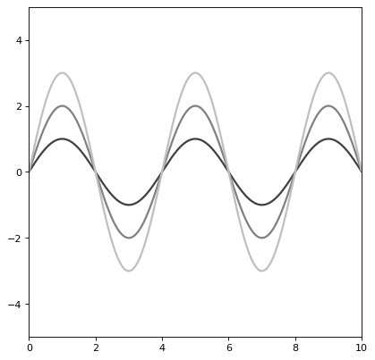

Sine1D¶
-
class
astropy.modeling.functional_models.Sine1D(*args, meta=None, name=None, **kwargs)[source]¶ Bases:
astropy.modeling.functional_models._Trigonometric1DOne dimensional Sine model.
- Parameters
- Other Parameters
- fixed
adict, optional A dictionary
{parameter_name: boolean}of parameters to not be varied during fitting. True means the parameter is held fixed. Alternatively thefixedproperty of a parameter may be used.- tied
dict, optional A dictionary
{parameter_name: callable}of parameters which are linked to some other parameter. The dictionary values are callables providing the linking relationship. Alternatively thetiedproperty of a parameter may be used.- bounds
dict, optional A dictionary
{parameter_name: value}of lower and upper bounds of parameters. Keys are parameter names. Values are a list or a tuple of length 2 giving the desired range for the parameter. Alternatively, theminandmaxproperties of a parameter may be used.- eqcons
list, optional A list of functions of length
nsuch thateqcons[j](x0,*args) == 0.0in a successfully optimized problem.- ineqcons
list, optional A list of functions of length
nsuch thatieqcons[j](x0,*args) >= 0.0is a successfully optimized problem.
- fixed
Notes
Model formula:
\[f(x) = A \sin(2 \pi f x + 2 \pi p)\]Examples
import numpy as np import matplotlib.pyplot as plt from astropy.modeling.models import Sine1D plt.figure() s1 = Sine1D(amplitude=1, frequency=.25) r=np.arange(0, 10, .01) for amplitude in range(1,4): s1.amplitude = amplitude plt.plot(r, s1(r), color=str(0.25 * amplitude), lw=2) plt.axis([0, 10, -5, 5]) plt.show()
Methods Summary
evaluate(x, amplitude, frequency, phase)One dimensional Sine model function
fit_deriv(x, amplitude, frequency, phase)One dimensional Sine model derivative
Methods Documentation
{kind=link}
{kind=link}